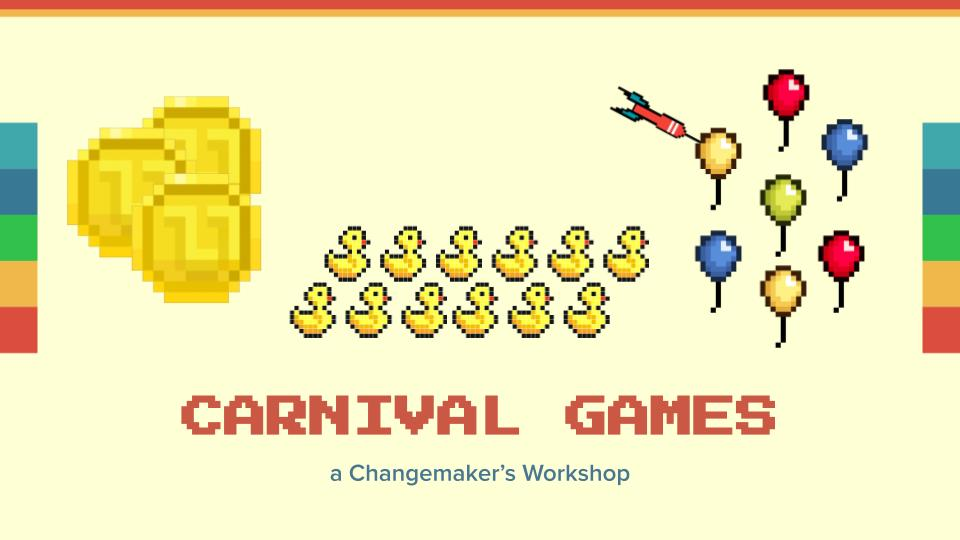
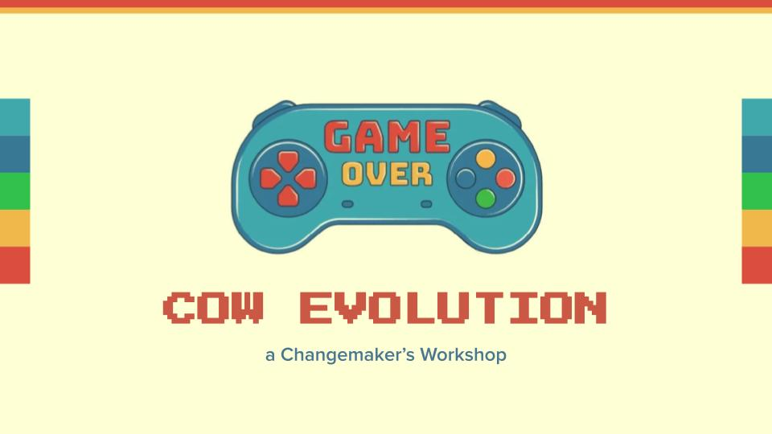
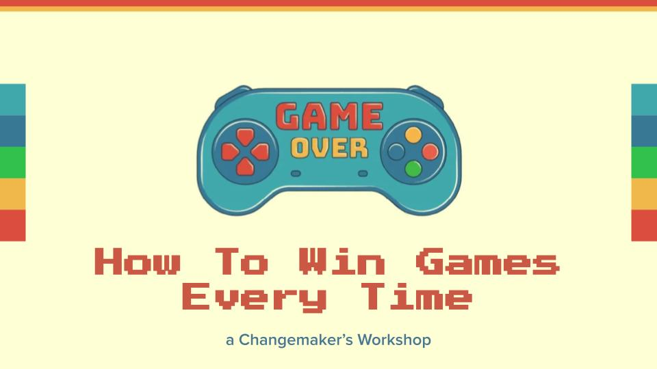
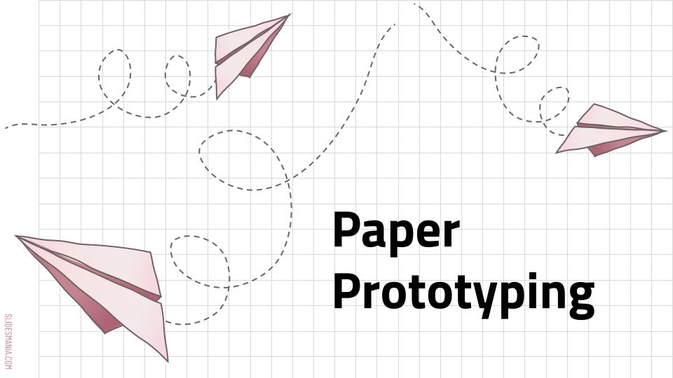
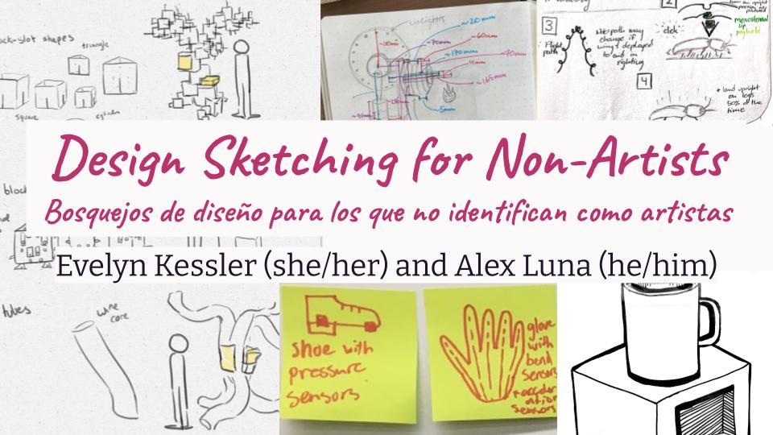
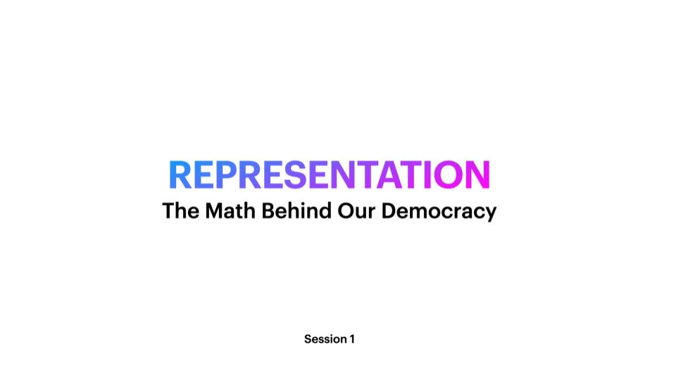
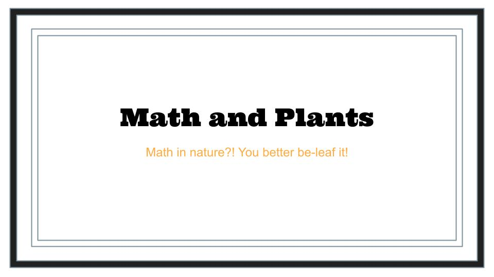
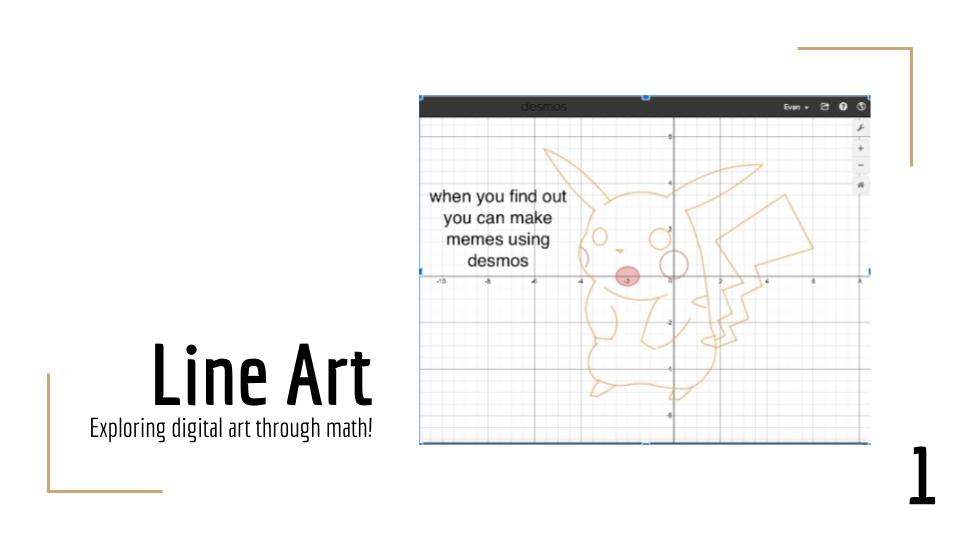

Math
Carnival Games
Step right up and discover which carnival games are scams and which are worth your money.
Flip some coins, pick some ducks, pop virtual balloons, and learn the math of it all!
We will be introducing probability and conditional probability in the framework of
various carnival games, including an activity at the end for students to create
their own version of a game!
Math, Probability, Middle School, High School
by Reid Bowen (Olin ‘22), Junwon Lee (Olin ‘21), Ashley Swanson (Olin ‘21)

Math
Cow Evolution
Math is everywhere - especially in video games! We’ll take a look at how to
make predictions and strategic choices in a super simple phone game called Cow Evolution.
Students will see how to simplify a complex system to a solvable problem, and understand
how to transfer the ideas to the video games they know and love.
Math, Exponential Growth, Middle School, High School
by Reid Bowen (Olin ‘22), Junwon Lee (Olin ‘21), Ashley Swanson (Olin ‘21)

Math
Games with a 100% Win Strategy
This workshop will improve students’ number sense, or understanding of
numbers and their manipulations. Number sense is a critical skill necessary
for students in future advanced math topics.
We will develop students’ number sense through a series of “games” that have
winning strategies. Students will learn that seemingly fair games have significant
advantages to one player over another if they think through the game well.
Math, Modular Arithmetic, Middle School, High School
by Reid Bowen (Olin ‘22), Junwon Lee (Olin ‘21), Ashley Swanson (Olin ‘21)

Engineering (Español and English Slides)
Paper Prototyping
In this lesson, students will learn basic paper craft skills and use those
skills in hands-on activities that will introduce them to prototyping, iterating,
and the design process. Students will do a prototype activity before being introduced
to prototyping and design process concepts.
Students will also develop and prototype their own solution to one of several different
design prompts that will challenge them to think critically and creatively,
applying these newly taught concepts.
Engineering, Rapid Prototyping, Middle School, High School
by Chase Joyner (Olin ‘21), Abigail Nordwall (Olin ‘22), and Jen Siegel (Olin ‘24)

Engineering (Español and English Slides)
Design Sketching
To be an entrepreneur, designer, or engineer, you need to get your ideas
out onto the page! In this workshop you will learn sketching skills such
as how to use multiple line weights, what is isometric view, how to draw
motion, and more that will be useful at any level!
Engineering, Design, Design Sketching, Doodling, Drawing, Middle School, High School
by Evelyn Kessler (Olin ‘24) and Alex Luna (Olin ‘22)

Math
The Math Behind Our Democracy
Who gets a say in democracy? Representation in the US is skewed based on where
you live and who draws your district boundaries. In part one, you’ll make maps
to visualize how changing the data impacts each state - and what that means for democracy.
In part two, you’ll find a way to quantify gerrymandering based on both the shapes of
districts and how much the outcome of an election differs from the actual votes cast.
Math, Data Visualization, Real-World Applications, High School
by Andrew Schnurr (Olin ‘21), Emily Nasiff (Olin ‘21), Ian Eykamp (Olin ‘24)

Math
Beauty of Math: Math and Plants
In this workshop, we teach the golden ratio and fibonacci sequence through
“being the sunflower.” Students will participate in an interactive website where
they control how a sunflower grows its seeds in a spiral to maximize their closeness.
From there, the workshop goes into what the golden ratio means, what makes it special,
how you can make it with the fibonacci sequence, and how it can be visualized as the golden spiral.
Math, Fibonacci Numbers, Golden Spiral, Golden Ratio, Middle School, High School
by Riley Zito (Olin ‘22), Mason Grabowski (Olin ‘22), Brent Usui (Olin ‘23), Annie Tor (Olin ‘22)
Math
Beauty of Math: Math in Art and Architecture
Come learn about how math ties together our favorite pieces of art and architecture!
We’ll dive into the mysteries of how artists,
architects, and designers across time and place have used math in their works, and we’ll
explore how we might use math to inform our creativity by making some art of our own.
This is the second workshop in the Math and Beauty series. Instructors are encouraged to run
the first workshop
(Math and Plants)
before introducing this workshop to help
students build foundational knowledge of the golden ratio and the Fibonacci sequence,
but this workshop can also be delivered as a free-standing session.
Math, Fibonacci Numbers, Golden Spiral, Golden Ratio, Middle School, High School
by Riley Zito (Olin ‘22), Mason Grabowski (Olin ‘22), Brent Usui (Olin ‘23), Annie Tor (Olin ‘22)

Math
Beauty of Math: Line Art
In this workshop, students use art as a way to increase understanding of
mathematical concepts. Students are first guided through activities that
look at everyday objects and break them down into simple shapes. Then,
students are introduced to a free online graphing program, Desmos, as a
way to review graphing lines and circles. Finally, students use Desmos
in an exploratory lesson aimed to increase relatedness around graphing
circles and using inequalities. The exercise walks students through
step-by-step equations to graph the face of a Bear, tying each equation
back to a distinct part of the Bear, and it invites students to apply
their own creative extensions, further solidifying their knowledge of circles and inequalities.
Math, Digital Art, Equations and Inequalities for Circles, Plotting Points and Lines, Desmos, Middle School, High School
by Riley Zito (Olin ‘22), Mason Grabowski (Olin ‘22), Brent Usui (Olin ‘23), Annie Tor (Olin ‘22)